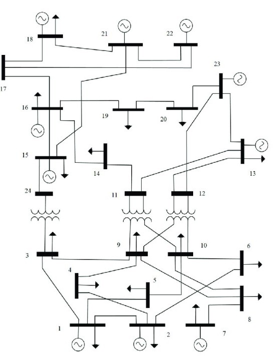

단선도 인식부터 검수·조류계산까지 연결하는
Agentic AI 기반 전력계통 분석 시스템

수십 개 모선과 선로의 연결 관계를 엔지니어가 수기로 일일이 확인하고 전산화하는 과도한 수작업 피로도
시각적 단선도에 표현된 가시 설비 구성과 엑셀 계통 제원 간의 누락 설비 및 규격 차이 발생
사소한 결선 오류 발생 시 조류계산 수렴 실패 및 어느 구간에서 오차가 생겼는지 원인 역추적 난항